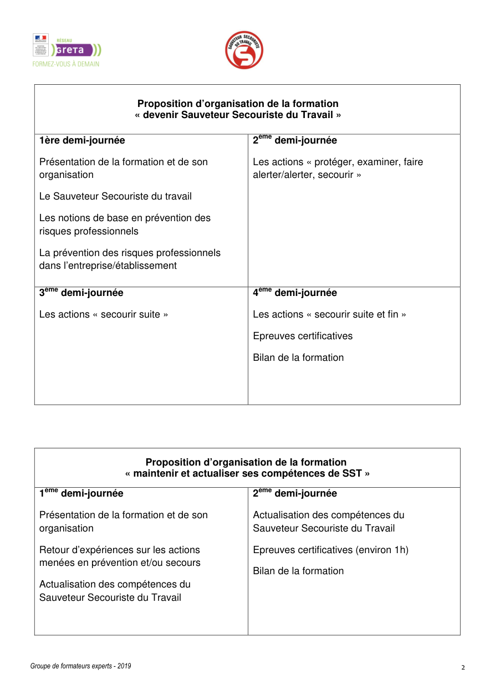

Structure conservée
Le fichier source n’est pas réécrit : il est intégré dans son état existant et mis en contexte dans la plateforme.
Outil pédagogique
Le support local assets/html/pap/PAP_SST.html est intégré tel quel, avec un environnement de lecture, des liens de navigation et des repères visuels.
Le fichier source n’est pas réécrit : il est intégré dans son état existant et mis en contexte dans la plateforme.

Le design autour du support améliore l’accès, la lisibilité et le lien avec C6, les outils et les urgences.
Support pédagogique intégré depuis le dépôt sans transformation du contenu source.
Lecture directe du vrai fichier pédagogique local.
Navigation directe vers les autres supports et modules associés.